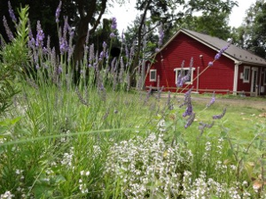

Information 来院時のご注意
お車でお越しの場合、カーナビによっては当院の住所入力での案内により違う場所が案内されてしまうことがあります。Google Mapsなどでご確認ください。
・リードを着けるか、ケージまたはカバンやネットに入れてお連れ下さい。
（移動の際に、逃げてしまうことがあります。ご注意ください。）
・初診時には、ワクチン接種またフィラリア予防など、予防歴の確認できるものをなるべくお持ちください。
・現在治療中の病気などにより、お薬を使われている場合は、ご来院時にお持ちください。